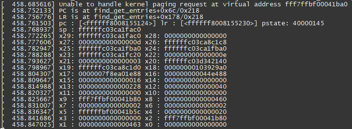

4.3.13. DDR故障排查指南
4.3.13.1. 启动日志DDR信息说明
XJ3系统软件的启动分成5个阶段： BootROM –> miniboot(SPL) -> Uboot -> Kernel ->Userpsace, DDR的识别和参数配置是在miniboot中的SPL阶段完成的，SPL镜像是预编译的，源码不对客户开放。
如果遇到系统启动卡死在SPL阶段，可以检查SPL log看具体卡死在什么位置。比如如果DDR自动探测阶段失败，会卡死在“ddr auto detect”的位置。
另外需要注意频率和容量是否检测正确。下图为启动打印示例：
4.3.13.2. DDR的故障分析和检测
启动阶段卡死
DDR 参数严重不匹配时，启动后可能在SPL内就挂死，如下图，可能是DDR training过了，但是检测容量处挂死，如下图所示：
也可能SPL启动成功，但是在uboot中发生随机异常重启，例如下图的log，也很可能是DDR故障导致，如下图所示：
这种发生在启动早期阶段挂死或异常，需要检查SPL使用的DDR配置参数，或者怀疑DDR硬件故障。
Kernel随机panic
在DDR参数已经相对稳定了后，在长稳、高低温等长稳测试中，可能会发生一些随机的Kernel panic，每次panic的位置不同，且panic的位置多在Kernel的通用代码中。这种就没必要分析软件逻辑了，很可能是DDR不稳定或者软件内存破坏导致。
例如下图中出错的地址是ffc00000f630,而正常的ARM64的kernel是ffffff开头的。
比如下图中的错误地址，地址的最高24位由ffffff变成了fff7ffb,说明在bit52和bit59发生了翻转，这种问题经常在高低温测试中遇到。

Stressapptest内存压力测试错误
DDR长稳测试中经常使用stressapptest做内存压力测试，开发中遇到怀疑有DDR故障的板子也可以使用stressapptest做一下测试，确认ddr问题。比如下面log，检测到miscompare错误，是DDR不稳定导致。

stressapptest是开源工具，可以进行内存、CPU和存储的压力测试。
预编译测试工具路径：sample\sample_base_test\bin
下载源码自行交叉编译：https://github.com/stressapptest/stressapptest。
常用测试命令：
./stressapptest -M 128M -s 3600 -m 8 -i 8 -C 8 -l /userdata/x3_stressapptest.log --cc_test
类似下方的打印应当出现：
ECC错误检测
XJ3 系统软件支持DDR的ECC错误纠错、检测功能。打开ECC保护后，如果检测到ECC错误，也可以确认为DDR不稳定。
可以在如下sysfs接口中查询是否发生1bit、2bit和3bit以上翻转。
cat /sys/devices/platform/soc/a2d10000.ddr_monitor/ddr_ecc_stat
打开ECC后，如果发生了Kernel Panic，也会在panic log中打印ecc统计信息。如下图log，发生了2次2bit的翻转。
ECC保护可以通过下面命令打开，重启后生效。
hrut_ddr_ecc s on
reboot